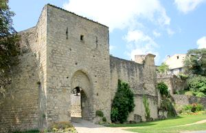
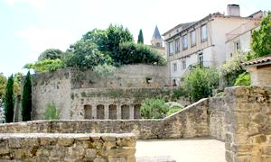
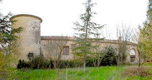
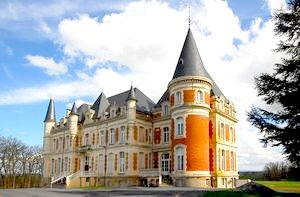
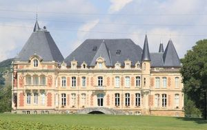
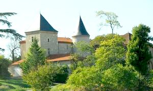
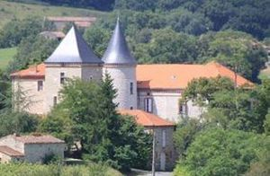
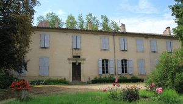
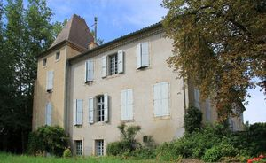

Recensement Jean-Claude Truffet
| Département | 81 — Tarn |
| Canton | Sémalens |
| Commune | Lautrec |
| Type d'édifice | Château |
| Période d'origine | XV-XIX |









A Lautrec, huit châteaux dont celui de Brametourte (voir article), de Malvignol (voir article) et Montcuquet (voir article), de Labadie, des Ormes, des Anges, la tour d'Aragon , Varagnes avec Lautrec. LAUTREC, cité médiévale, ancienne vicomté, elle est le berceau de la famille Toulouse Lautrec dont le peintre affichiste est lillustre descendant. Fondée vers 940, la vicomté de Lautrec occupait, entre le Dadou et lAgout, le premier vicomte de Lautrec fut Sicard, fils de Bernard, lui-même vicomte dAlbigeois, qui partagea ses terres entre ses deux fils. Très vite les riches terroirs du Lautrécois suscitèrent les convoitises des grandes familles de la Chevalerie locale auxquelles le roi de France, Philippe IV le Bel, vint sajouter en 1306, pour une partie. La vicomté devint une mosaïque, un puzzle de seigneuries et de pouvoirs enchevêtrés, aux mains des descendants dIsarn de Lautrec ou des comtes de Foix. ORMES ce château est un des plus beaux exemples du département de château du XIXe siècle tentant de pasticher l'architecture du XVIIe siècle. LABADIE chambres d'hôtes. Des ANGES pas d'information historique. VARAGNES Le château dépendait de la seigneurie de Serviés dont le seigneur était dans le dernier quart du XVe siècle Jean de Castelnau, gouverneur de Lombers. ORMES, château des Ormes appartenait au comte Jacques de Foucaud et sa femme Béatrix dAlexandry dOrengiani.
utilisé dans les dépendances du château des Ormes, la métairie de La Phalipié. Henri Dunant (1828-1910) fondateur de la Croix-Rouge. Robert Gamzon, alias Castor, fonde les Éclaireurs Éclaireuses israélites de France (EIF) en 1923. Aujourd'hui propriété de l'APAJH depuis 1976.
TOUR-ARAGON, le lieu fut le siège de combats durant les Guerres de Religions, notamment pris par le vicomte de Turenne en 1580; en effet le 21 janvier de cette même année, Turenne avait été nommé gouverneur de Castres et se dirigea bientôt vers Lautrec, c'est alors qu'il prit par capitulation Latour d'Aragon. Lautrec est aujourd'hui classé parmi les plus beaux villages de France ses remparts et ses champs de pastel, Lautrec Fondé en 940, aspect médiéval réhabilité et mis en valeur, les remparts, les fortifications, la tour de guet, les ruelles médiévales et la Collégiale Saint-Rémy du XIVe siècle, son moulin à vent en état de fonctionnement. Le village avec ses rues étroites saccroche à flanc de coteau, en contrebas de la forteresse du vicomte. La communauté sabrite derrière ses remparts et ses fossés. De lenceinte fortifiée, il ne reste aujourdhui plus quune petite partie avec notamment la porte de la Caussade. Le seul nom du quartier de la Brèche dit assez que Lautrec ne fut pas toujours le paisible chef-lieu de canton quil est devenu. Varagnes, a été en grande partie remanié à des époques récentes, mais conserve tout de même quelques beaux restes dont une belle et massive tour carrée datant du XVIe ou du XVIIe du siècle, coiffée dun toit en pavillon. Ormes, construit selon un savant jeu de décrochements et rendu pittoresque par l'implantation de fines échauguettes aux toits d'ardoise,ils joue savamment, comme avait si bien su le faire les architectes du temps de Louis XIII, avec le jeu de polychromie donné par la pierre, la brique et l'ardoise. Autour des toits en pavillons viennent s'implanter de belles lucarnes. Afin de rendre plus pittoresque ce morceau d'architecture, des perrons garnis de balustres ont été implantés le long des façades. Même si dans le Tarn le XIXe siècle fut un des siècles où l'on construisit le plus de châteaux, rares sont les chantiers d'une telle ampleur. Le château des Ormes étonne, non seulement par la grande qualité de la réalisation, mais aussi par leurs vastes dimensions.
Famille Toulouse Lautrec Famille de Jean de Castelnau
"
A Lautrec, huit châteaux dont celui de Labadie, des Ormes, des Anges, la tour d'Aragon , Varagnes .